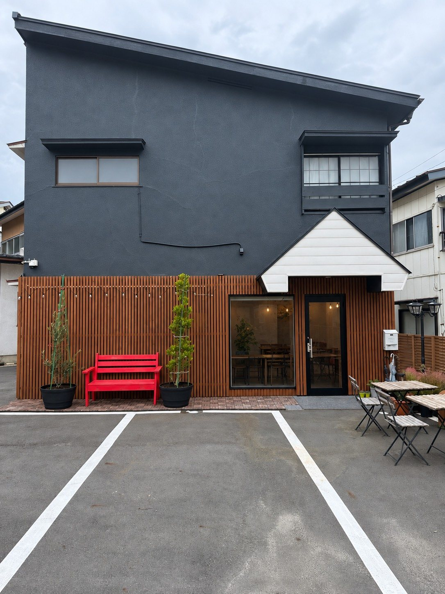
橋がつなぐ、まちのカフェ。
福島県白河市のちいさなお店
LE PONT
Un petit pont dans le quartier.
赤いベンチと、せいろの湯気と。きょうも、まちのまんなかで。
- Open
- 木・金・土・日・祝
- Hours
- 11:00 – 15:00
- Parking
- 駐車場あり
- Delivery
- Uber Eats 対応
About
橋がつなぐ、まちのカフェ
フランス語で「橋」を意味する le pont。
人と人、世代と世代をつなぐ橋のような場所でありたい。そんな想いを、ピンクの欄干の橋のロゴに込めました。福島県白河市の、気軽に立ち寄れるちいさなカフェです。
名物は、ふっくら蒸し上げるせいろ蒸し。手ごねのチキンバーガーや、手づくりのスイーツも。明るいランチタイムに、ゆっくりとお過ごしください。
店先には、写真を撮りたくなる赤いベンチ。晴れた日はテラス席もどうぞ。
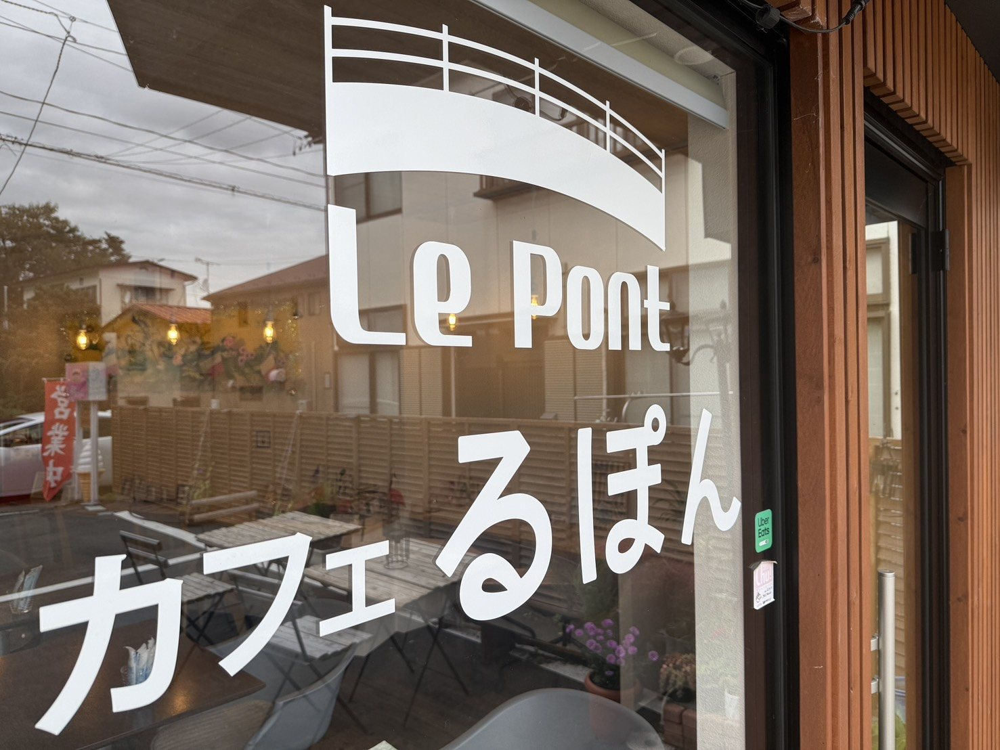
-
橋のロゴ
ピンクの欄干がかわいい、まちのシンボル。
-
名物せいろ蒸し
湯気とともに、ふっくら。からだにやさしい一皿。
-
赤いベンチ
ストリングライトの下、写真映えのフォトスポット。
-
お昼にゆっくり
木〜日・祝のランチタイム営業。駐車場・Uber Eats も。
Interior
こぢんまり、あたたかい店内
Un intérieur chaleureux
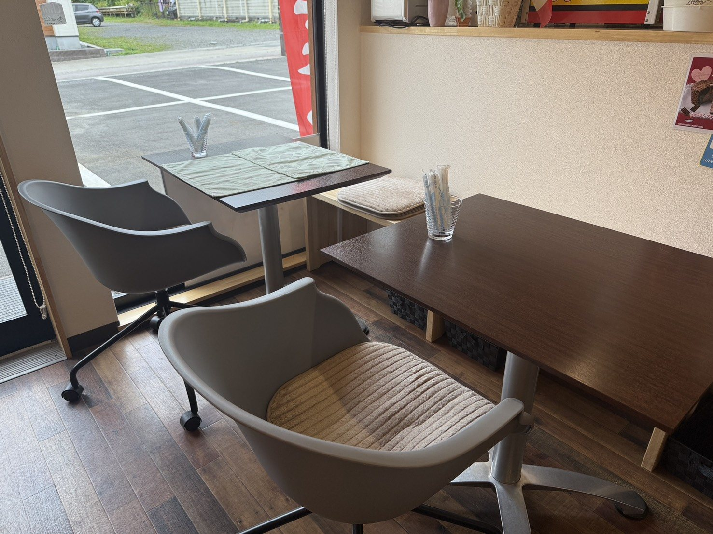
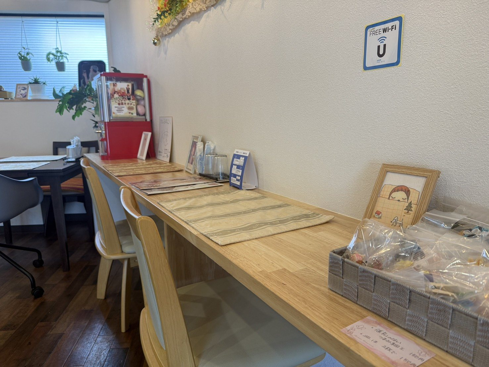
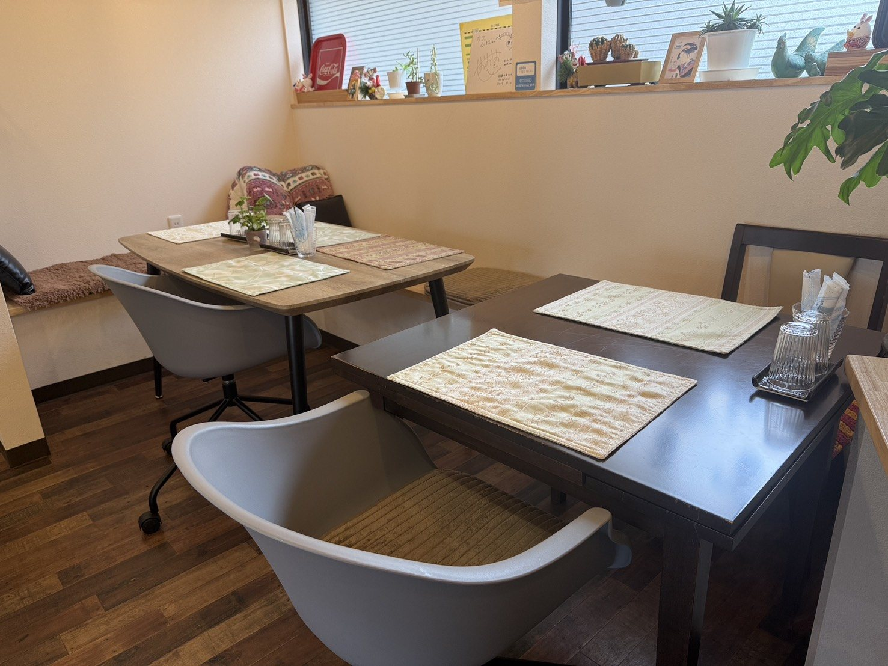
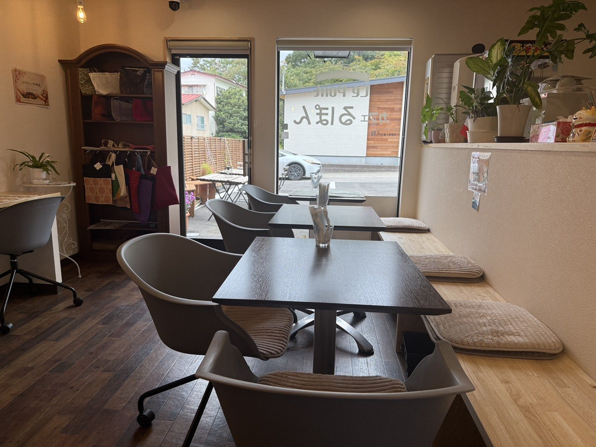
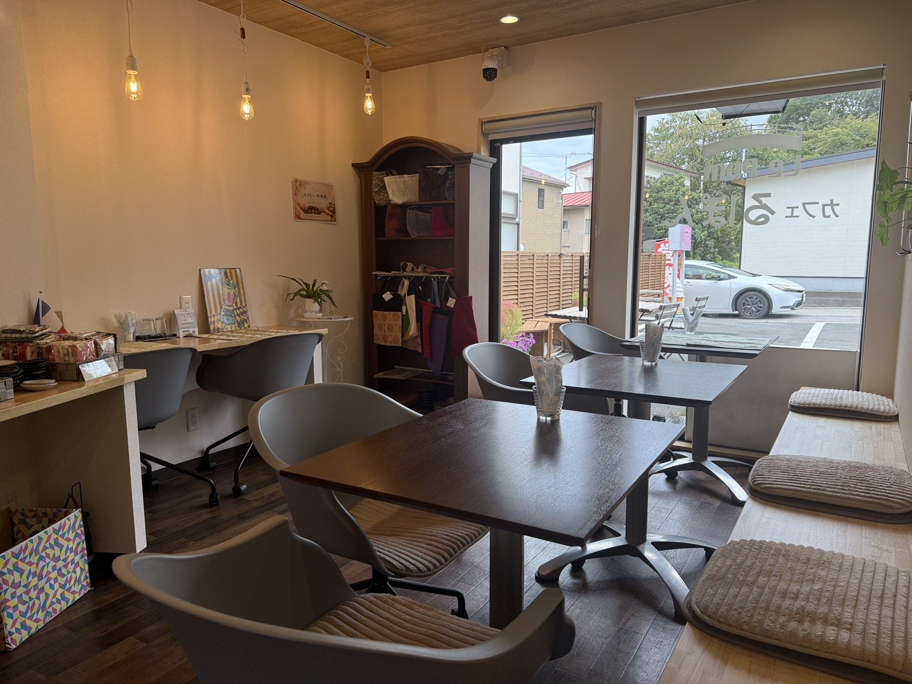
Terrace & Bench
赤いベンチと、テラス
Le banc rouge
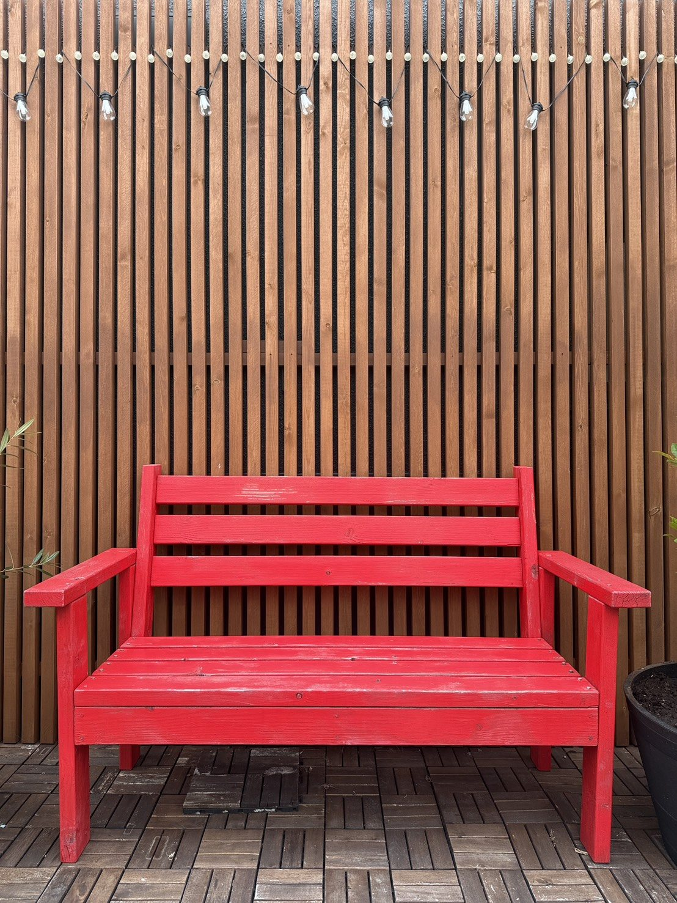
「ここで一枚、どうぞ。」
ウッドの壁と、連なるストリングライト。その前に置かれた、真っ赤なベンチ。カフェ るぽんの、いちばんの撮影スポットです。
晴れた日は、駐車場横のテラス席も。お子さま連れでも、おひとりでも、気兼ねなくお過ごしください。
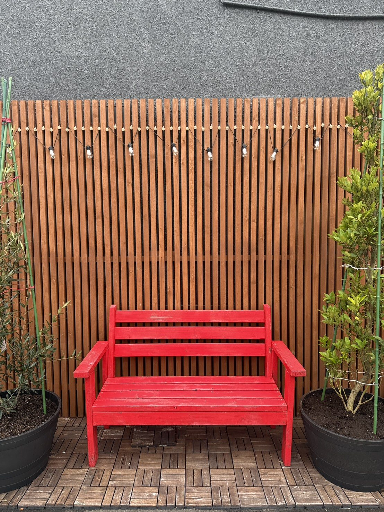
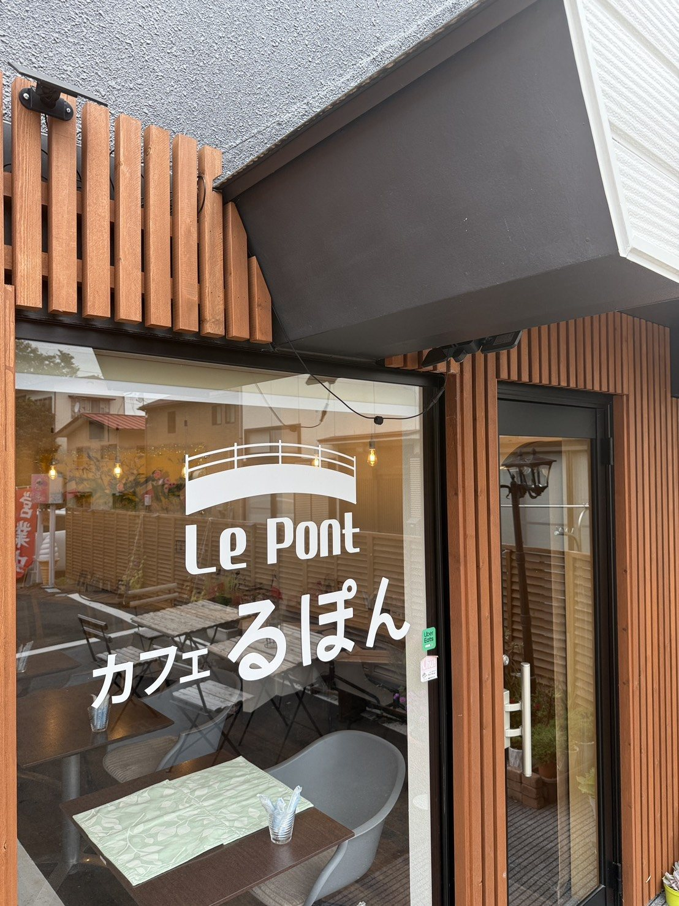
Access & Info
アクセス・店舗情報
Comment venir
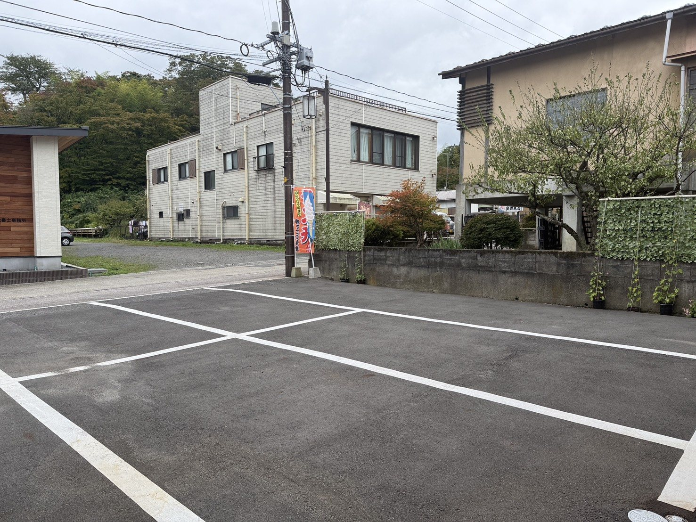
| 店名 | Café Le Pont（カフェ るぽん） |
|---|---|
| 住所 | 福島県白河市向新蔵50番地 |
| 電話 | 090-4256-7353 |
| 営業時間 | 11:00–15:00（木・金・土・日・祝） |
| 定休日 | 月・火・水 |
| 駐車場 | あり（店舗前） |
| デリバリー | Uber Eats 対応 |
| SNS | Instagram @rupon_208 |
À bientôt chez Le Pont.
赤いベンチで、お待ちしています。
ご予約・お問い合わせはお電話で。日々のメニューや営業のお知らせは Instagram で発信しています。